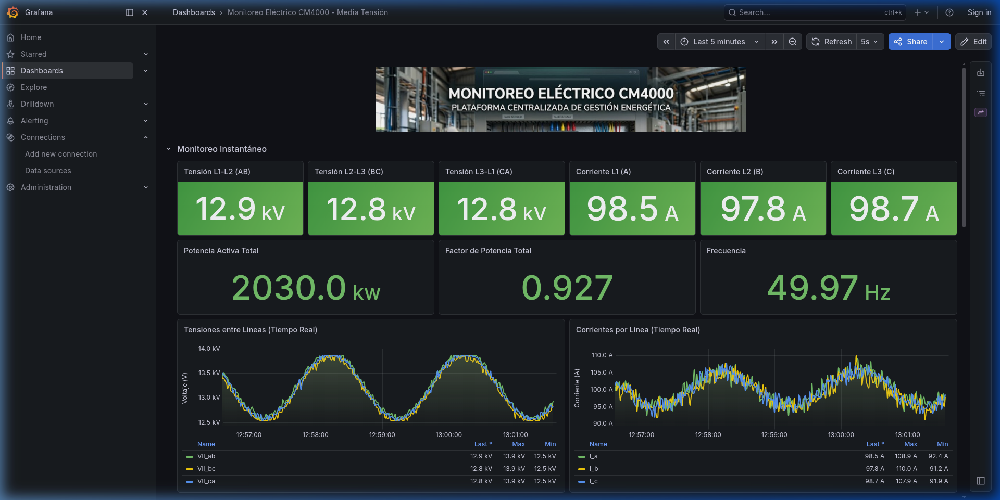

¿Qué es este sistema?
El simulador CM4000 replica el comportamiento de un medidor de energía industrial Schneider Electric PowerLogic operando en una red de Media Tensión a 13.2 kV. Genera telemetría eléctrica realista (tensiones, corrientes, potencias, armónicos y factor de potencia) a través del protocolo Modbus-TCP, que puede ser consumida por cualquier sistema SCADA o HMI.
Toda la infraestructura corre en Docker: el simulador expone los datos, un nodo adquisidor los escribe en InfluxDB y Grafana los visualiza en paneles configurables en tiempo real. Adicionalmente, Prometheus y cAdvisor monitorean la salud y rendimiento de la infraestructura misma.
¿Qué se puede hacer con este simulador?
- Visualizar telemetría en tiempo real — tensiones, corrientes, potencias, THD y factor de potencia actualizados cada segundo en Grafana
- Consultar histórico consolidado — promedios de 15 minutos y acumuladores de energía guardados indefinidamente en InfluxDB
- Inyectar fallas eléctricas remotamente — simular apagones, pérdida de fase, huecos de tensión, sobretensiones, sobrecargas, armónicos y bajo PF desde una consola TCP sin interrumpir la adquisición
- Probar alarmas del SCADA — el adquisidor evalúa límites segundo a segundo y registra cada activación y normalización de alarma con histéresis
- Personalizar los paneles — Grafana permite editar los dashboards en caliente; los cambios se persisten en el repositorio al usar el script de apagado
Requisitos Previos
Para ejecutar este simulador se necesita el siguiente software instalado en el sistema:
- Docker y Docker Compose — Para levantar la infraestructura de InfluxDB, Grafana, Prometheus y cAdvisor.
- Python 3.8+ — Con el entorno virtual configurado (
python3 -m venv .venv). - Dependencias Python — Instaladas ejecutando
pip install -r requirements.txt.
Arranque de la Infraestructura
El método recomendado es usar el script start.sh, que orquesta el arranque de todos los servicios en orden correcto.
Método recomendado — Docker
$ cd ~/Documentos/tpfinal/TCP-IP-IPSET $ ./start.sh
El script levanta los servicios en este orden:
- Compila las imágenes Docker del simulador y el adquisidor
- Levanta el simulador Modbus (
puerto 5020) y el control TCP (puerto 5021) - Levanta InfluxDB y espera hasta recibir
status: passantes de continuar - Inicia el adquisidor (
cm4000_client.py) y Grafana - Abre automáticamente el navegador en
http://localhost:3000
Método alternativo — Solo Python (sin Docker)
Para pruebas rápidas de protocolo sin levantar la infraestructura completa.
$ source .venv/bin/activate $ python3 cm4000_server.py --port 5020 --control-port 5021 # Para simular 33 kV en vez de 13.2 kV (V_LN = 19050 V): $ python3 cm4000_server.py --v-nominal 19050
Interfaces de Monitoreo
Una vez que el stack está corriendo, se exponen varias interfaces web:
- Grafana —
http://localhost:3000— Paneles de control. Acceso automático como Administrador. Contiene dos paneles: CM4000 (datos eléctricos) e Infra Observability (métricas Docker). - InfluxDB —
http://localhost:8086— Base de datos de series temporales eléctricas. Usuarioadmin, passadminpassword. - Prometheus —
http://localhost:9090— Motor de métricas y scraper de la infraestructura.
Visualización de datos
A continuación se muestra cómo se ven los paneles en Grafana con datos reales del simulador:

Inyección Remota de Fallas
El cliente de control se conecta al puerto TCP 5021 (independiente del Modbus). Puedes ejecutarlo localmente o desde otra máquina en la red agregando el parámetro --host.
Conexión al puerto de control
$ source .venv/bin/activate # Conexión local $ python3 cm4000_control.py --port 5021 # Conexión remota $ python3 cm4000_control.py --host <IP_SERVIDOR> --port 5021
Una vez conectado aparece el prompt CM4000>. La sintaxis general es:
CM4000> <evento> <fase|all> <magnitud> <duración_seg>
Comandos de monitoreo interno
status— Lista las fallas activas y los segundos restantessnapshot— Muestra los valores físicos actuales del motor (sin codificación Modbus)help— Referencia rápida de todos los comandos disponiblesshutdown— Detiene completamente el servidor remotoquit/exit— Cierra solo la conexión TCP local; el simulador sigue corriendo
Catálogo de fallas
| Falla | Comando | Descripción | |
|---|---|---|---|
| Outage | outage <seg> | Colapsa tensiones y corrientes a <1%. Simula corte total de suministro. | |
| Phase Loss | phase_loss <a|b|c> <seg> | Una fase cae a 0 V / 0 A. Simula fusible de MT quemado o cable cortado. | |
| SAG | sag <fase|all> <%> <seg> | Bajada abrupta del voltaje RMS. Típico en arranque de grandes motores. | |
| SWELL | swell <fase|all> <%> <seg> | Elevación del voltaje RMS. Causado por maniobras o desplazamiento del neutro. | |
| Overload | overload <fase|all> <mult> <seg> | Multiplica la corriente de fase por el factor dado. Testea protecciones ANSI 50/51. | |
| Low PF | low_pf <pf> <seg> | Hunde el Factor de Potencia. Simula red reactiva sin compensación capacitiva. | |
| Harmonic | harmonic <fase|all> <thd%> <seg> | Eleva el THD por encima del límite del 8% de la norma EN50160. | |
| PDF (Perfil Auto) | Inyecta 1–3 fallas aleatorias combinadas. Solicita intervalo y duración total de forma interactiva. |
Estrategia de Persistencia — Doble Bucket
El adquisidor cm4000_client.py escribe en dos buckets de InfluxDB con diferentes políticas de retención:
| Bucket | Retención | Contenido |
|---|---|---|
cm4000_realtime |
1 hora | Telemetría de alta frecuencia (1 s). Measurement mediciones_realtime con tensiones, corrientes, potencias, frecuencia, THD y PF. Los acumuladores de energía mod10k están excluidos. Los datos se auto-eliminan al expirar. |
cm4000_data |
Infinita | Histórico de largo plazo. mediciones_electricas contiene promedios de 15 min con acumuladores kWh, kVARh y demandas máximas. eventos_alarmas registra cada transición ACTIVA → INACTIVA con histéresis, segundo a segundo. |
Apagado Seguro y Sincronización
Si se realizaron cambios en los paneles de Grafana y se guardaron con el botón Save, se debe detener el stack con stop.sh y nunca con CTRL+C.
CTRL+C o docker compose down directamente perderá los cambios guardados en Grafana que aún no fueron exportados.
Procedimiento de apagado
- Guardar los cambios en Grafana haciendo clic en el botón Save en cualquiera de los paneles
- Ejecutar el script de apagado (
./stop.sh) desde la terminal - El script exporta ambos dashboards activos vía API HTTP (
dashboard.jsoneinfra.json) automáticamente - Una vez terminado, hacer commit de los archivos exportados si se quieren versionar los cambios
$ ./stop.sh # (opcional) Versionar los cambios del dashboard $ git add provisioning/dashboards/json/dashboard.json $ git commit -m "chore: update grafana dashboard"